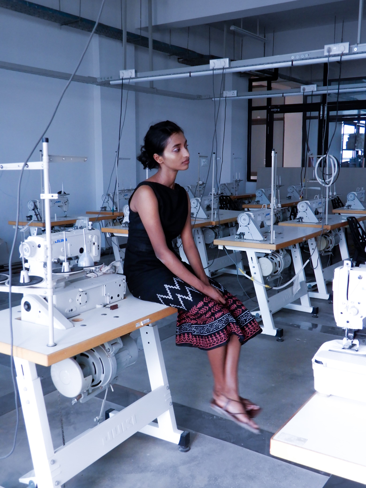
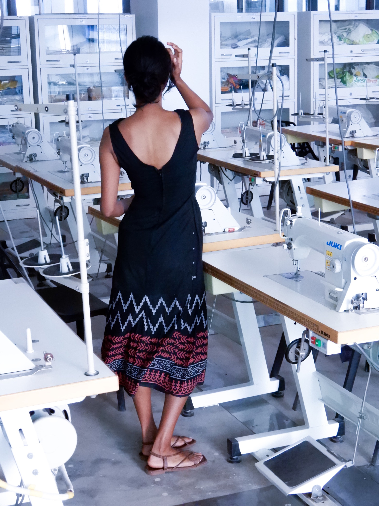

Apparel





This project involved the construction of a cotton cocktail dress, bringing together multiple design and technical elements into a single garment. The dress features a princess cut silhouette, a front cowl neck, a deep back neck and a subtle ikat print detail at the hem — each element contributing to an overall look that is clean and elegant. Pattern drafting was the primary construction technique, and the princess cut proved to be the most technically demanding aspect of the process.
For the photoshoot the dress was shot in the workshop where it was made — a deliberate choice that quietly celebrates the craft and skill behind the garment without drawing attention away from it.